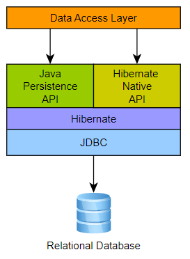
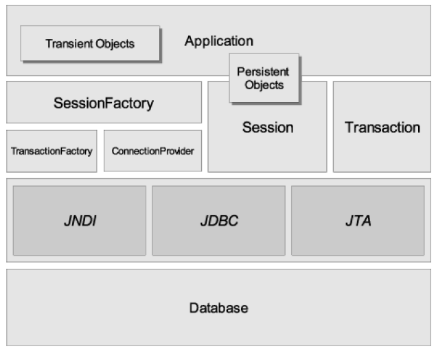
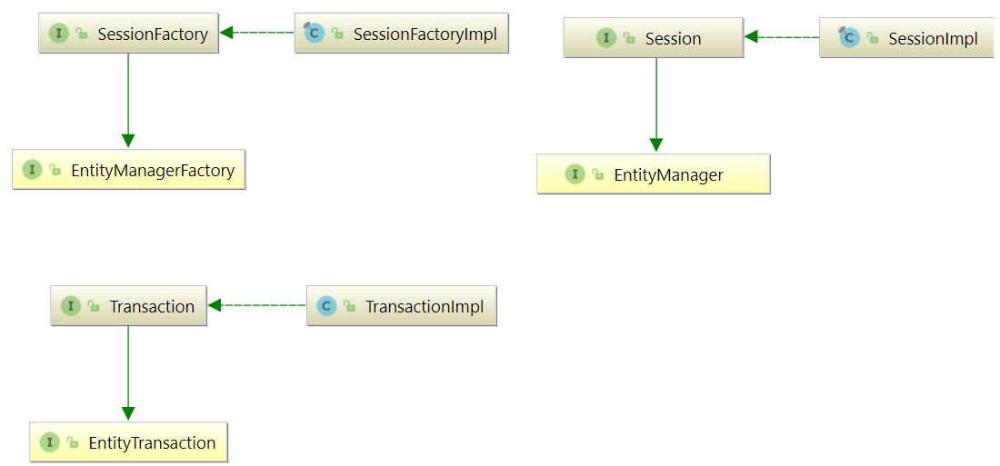
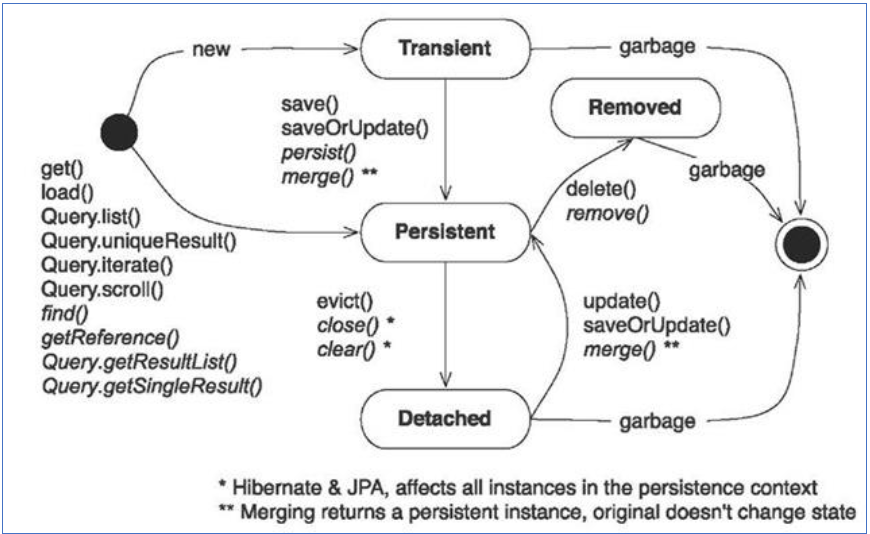

Hibernate, como una solución ORM, efectivamente "se ubica entre" la capa de acceso a datos de la aplicación Java y la base de datos relacional, como se puede ver en el diagrama siguiente.
Arquitectura
La arquitectura "completa" abstrae la aplicación de las APIs de JDBC/JTA y permite que Hibernate se encargue de los detalles. Hibernate usa JDBC para conectar con la BBDD y ejecutar querys.
|  |  |
|---|---|
Como proveedor de persistencia de Jakarta, Hibernate implementa las especificaciones de la API de persistencia de Java (JPA) y la asociación entre las interfaces de persistencia de Jakarta y las implementaciones específicas de Hibernate, que se pueden ver en el siguiente diagrama:

-
🤖 SessionFactory: inmutable, es una fábrica para instanciar objetos
Session.EntityManagerFactoryes el equivalente de Persistencia de Jakarta deSessionFactory. UnaSessionFactoryes muy costosa de crear, por lo que, para cualquier base de datos dada, la aplicación debe tener solo una SessionFactory asociada. SessionFactory mantiene los servicios que Hibernate usa en todas las sesiones, como cachés de segundo nivel, grupos de conexiones, integraciones de sistemas de transacciones, etc. -
🤖 Session: En la nomenclatura de persistencia de Jakarta, la sesión está representada por un
EntityManager. Session envuelve un JDBC java.sql.Connection y actúa como una fábrica para las instancias de org.hibernate.Transaction. -
🤖 Transaction:
EntityTransactiones el equivalente de Jakarta Persistence y ambos actúan como una API de abstracción para aislar la aplicación del sistema de transacciones subyacente en uso (JDBC o JTA).
Persistence Context
Tanto la API org.hibernate.Session como la API jakarta.persistence.EntityManager representan un contexto para tratar con datos persistentes. Este concepto se denomina contexto de persistencia. Los datos persistentes tienen un estado en relación con un contexto de persistencia y la base de datos subyacente.
-
🧣 Transient (transitorio): la entidad acaba de ser instanciada y no está asociada con un contexto de persistencia. No tiene una representación persistente en la base de datos y, por lo general, no se ha asignado ningún valor de identificador (a menos que se haya utilizado el generador asignado). No está asociado a ninguna sesión.
-
🧣 Persistent: la entidad tiene un identificador asociado y está asociada con un contexto de persistencia. Puede o no existir físicamente en la base de datos todavía.
-
🧣 Detached (separado): la entidad tiene un identificador asociado pero ya no está asociada con un contexto de persistencia (generalmente porque el contexto de persistencia se cerró (sesión) o la instancia se desalojó del contexto).
-
🧣 Removed: la entidad tiene un identificador asociado y está asociada con un contexto de persistencia; sin embargo, está programada para su eliminación de la base de datos.

Configuración Hibernate
Hibernate requiere saber de antemano dónde encontrar la información de configuración de la BBDD y de mapeo d que define cómo se relacionan las clases de Java con las tablas de la base de datos. Toda esta información generalmente se proporciona como un archivo de propiedades de Java estándar llamado hibernate.properties, o como un archivo XML llamado hibernate.cfg.xml.
La mayoría de las propiedades cogen los valores predeterminados y no es necesario especificarlos en el archivo de propiedades a menos que sea realmente necesario. Este archivo se guarda en el directorio raíz del classpath de su aplicación.
Para el ejemplo usaremos un fichero XML de configuración:
<?xml version="1.0" encoding="UTF-8" ?>
<hibernate-configuration xmlns="http://www.hibernate.org/xsd/orm/cfg">
<session-factory>
<property name="connection.driver_class">com.mysql.cj.jdbc.Driver</property>
<property name="connection.url">jdbc:mysql://localhost:3306/testdb2</property>
<property name="connection.username">root</property>
<property name="connection.password">root</property>
<property name="dialect">org.hibernate.dialect.MySQLDialect</property>
<!--Mapeo mediante anotaciones -->
<mapping class="es.severo.persistence.entity.Tramite"></mapping>
</session-factory>
</hibernate-configuration>
Website Oficial con todas las propiedades del fichero de configuración
Entity properties
Las clases que sean entidades deben cumplir las siguientes convenciones recomendadas:
- 🚀 Incluir atributos de clase con visibilidad privada, private.
- 🚀 Añadir el constructor por defecto, sin argumentos. Esto es un requisito de Jakarta e Hibernate para todas las clases persistentes. Hibernate necesita crear objetos para nosotros, utilizando Java Reflection.
- 🚀 Incluir getters y setters.
- 🚀 Declarar atributos de identificador (
@Id) con nombres consistentes, y que se use un wrapper y no un tipo de dato primitivo. Ej Long o Integer. El atributo identificador no necesariamente necesita ser mapeado a la(s) columna(s) que definen físicamente la clave primaria. Sin embargo, debe asignarse a la(s) columna(s) que pueden identificar de forma única cada fila. - 🚀 Mapear la entidad con las anotaciones necesarias.
@Entitypara denotar que es una entidad. Y las anotaciones que se requieran en los atributos.
--batches y flush and clear
Hibernate Query Language - HQL Official Website
JPQL (Java Persistence Query Language) se inspiró en las primeras versiones de HQL y es un subconjunto del HQL moderno.
Si se desea el cumplimiento estricto de la persistencia de Jakarta, tendríamos que utilizar en la configuración la siguiente propiedad hibernate.jpa.compliance.query=true. Con esta configuración, cualquier intento de utilizar funciones HQL más allá del subconjunto JPQL dará como resultado una excepción.
HQL (y JPQL) se basan libremente en SQL y son fáciles de aprender para cualquiera que esté familiarizado con SQL.
Hibernate usa un poderoso lenguaje de consulta (HQL) que es similar en apariencia a SQL. Sin embargo, en comparación con SQL, HQL está completamente orientado a objetos y comprende nociones como herencia, polimorfismo y asociación.
El lenguaje de consulta de Hibernate (HQL) y el lenguaje de consulta de persistencia de Java (JPQL) son lenguajes de consulta orientados a objetos basados en SQL y muy similares a SQL.
HQL no es la única forma de escribir consultas en Hibernate:
- 🧨Criteria ofrece una API basada en Java con mayor seguridad de tipos en tiempo de compilación, y
- 🧨también son posibles las consultas SQL nativas.
Sin embargo, HQL es la opción más conveniente para la mayoría de las personas la mayor parte del tiempo.
💈 Hibernate DML language
Hibernate provee métodos para ejecutar sentencias DML.
- Insert: para agregar objetos usamos el método
persist(). En versiones anteriores se usabasave(), pero este método está deprecado y no se recomienda su uso. - Update: cuando modificamos un objeto usaremos
merge()para guardar su estado en la base de datos. En versiones anteriores se usabasaveOrUpdate(), pero este método está deprecado y no se recomienda su uso. - Delete: cuando queremos borrar un objeto en la base de datos usamos
remove(). En versiones anteriores se usabadelete(), pero este método está deprecado y no se recomienda su uso.
public static void main(String[] args) {
Session session = null;
try {
session = HibenateUtil.getSessionFactory().openSession();
session.beginTransaction();
LocalDateTime now = LocalDateTime.now();
Tramite tramite = new Tramite();
tramite.setFecha(now);
tramite.setTipo("Crédito");
/* INSERT */
//session.save(tramite);//deprecated
session.persist(tramite);
/* UPDATE */
tramite.setTipo("Aval"):
//session.saveOrUpdate(tramite);//deprecated
session.merge(tramite);
/* DELETE */
//session.delete(tramite);//deprecated
session.remove(tramite);
session.getTransaction().commit();
} catch (Exception e) {
if (session.getTransaction() != null) {
session.getTransaction().rollback();
throw e;
}
} finally {
if (session != null)
session.close();
}
}
💈 Obtener una entidad con sus datos inicializados
También es bastante común querer obtener una entidad junto con sus datos, es decir, cargar un objeto.
- Obtención de una referencia de entidad con sus datos inicializados con Jakarta Persistence
Person person = entityManager.find(Person.class, personId);
- Obtención de una referencia de entidad con sus datos inicializados con la API de Hibernate
Person person = session.find(Person.class, 1L);
- Obtención de una referencia de entidad con sus datos inicializados usando la API de Hibernate byId()
Person person = session.byId(Person.class).load(personId);
null si no se encuentra ninguna fila de base de datos coincidente.
- Obtención de una referencia de entidad Opcional con sus datos inicializados usando la API de Hibernate byId()
También es posible devolver un Java 8 Opcional:
Optional<Person> optionalPerson = session.byId(Person.class).loadOptional(personId);
💈 Hibernate Query
La interfaz de sesión de Hibernate refina los tipos de devolución de las operaciones de EntityManager que crean objetos de consulta.
Session#createQuery(), Session#createNamedQuery() y otras operaciones similares devuelven una instancia de la extensión org.hibernate.query.Query.
Algunas formas sobrecargadas de estas operaciones devuelven un tipo sin formato, pero en Hibernate 6 todas han quedado obsoletas y el uso del tipo Query sin formato ahora se desaconseja enfáticamente.
Important
Los programas deben migrar al uso de sobrecargas con seguridad de tipos que aceptan un objeto Class<T> y devuelven una Query<T> con tipo.
La interfaz de consulta de Hibernate ofrece operaciones adicionales que no están disponibles a través de TypedQuery, como veremos a continuación.
Query<Tramite> query = session.createQuery(
"from Tramite where tipo = :tipoTram",
Tramite.class);
🎐 BINDING arguments en los parámetros de la query
Una consulta puede tener parámetros con nombre o parámetros ordinales:
- Named parameters: se especifican usando la sintaxis: :name
- Ordinal parameters: se especifican usando la sintaxis ?1, ?2, etc.
Query<Tramite> query = session.createQuery(
"from Tramite where tipo = :tipoTram",
Tramite.class)
.setParameter("tipoTram", "Crédito");
Los parámetros ordinales de estilo JPQL se numeran desde 1. Al igual que con los parámetros con nombre, un parámetro ordinal puede aparecer varias veces en una consulta.
Query<Tramite> query = session.createQuery(
"from Tramite where tipo = ?1",
Tramite.class)
.setParameter(1, "Crédito");
Warning
No es una buena idea mezclar named parameters y ordinales en una sola consulta.
🎐 EJECUTANDO la consulta
La interfaz Query se utiliza para controlar la ejecución de la consulta. Ofrece tres tipos de resultados:
getResultList(): es útil cuando la consulta puede devolver cero o más de un resultado.getSingleResult(): es solo para casos en los que la consulta siempre devuelve exactamente un resultado. Lanza una excepción cuando la base de datos devuelve cero o muchos resultados.getResultStream(): permite que los resultados se recuperen de forma incremental, utilizando un cursor de base de datos.
Query<Tramite> query = session.createQuery(
"from Tramite where tipo = :tipoTram",
Tramite.class)
.setParameter("tipoTram", "Crédito");
List<Tramite> tramites = query.getResultList();
tramites.forEach(System.out::println);
Query<Tramite> query2 = session.createQuery(
"from Tramite where tipo = ?1",
Tramite.class)
.setParameter(1, "Crédito")
.setMaxResults(1);//limitación de un resultado
Tramite tramites2 = query2.getSingleResult();
System.out.println(tramites2);
try(Stream<Tramite> tramiteStream = session.createQuery(
"from Tramite where tipo = ?1",
Tramite.class)
.setParameter(1, "Crédito")
.getResultStream()) {
List<Tramite> t = tramiteStream
.skip(2)//salta los dos primeros, los quita
.limit(5)//saca como máximo 5 ítems
.collect(Collectors.toList());
t.forEach(System.out::println);
}
Warning
El método getResultStream() no suele ser útil. Casi siempre es una mala idea mantener abierto el cursor de una base de datos.
🎐 SCROLLING y STREAMING resultados
La interfaz org.hibernate.query ofrece dos operaciones especializadas para leer los resultados de la consulta de manera incremental, mientras mantiene un ResultSet JDBC abierto asignado a un cursor del lado del servidor.
Si la aplicación no cierra un ScrollableResults, Hibernate cerrará automáticamente los recursos subyacentes cuando finalice la transacción. Sin embargo, es mucho mejor cerrar el ResultSet lo antes posible.
try(ScrollableResults<Tramite> scrollableResults = session.createQuery(
"from Tramite where tipo = ?1",
Tramite.class)
.setParameter(1, "Crédito")
.scroll()) {
while(scrollableResults.next()) {
Tramite ta = scrollableResults.get();
System.out.println(ta);
}
}
De manera similar, getResultStream() es una operación especializada para leer resultados de consultas de manera incremental, mientras mantiene un ResultSet JDBC abierto asignado a un cursor del lado del servidor.
Warning
El método getResultStream() no es una forma conveniente de obtener un flujo de Java. Por ello, usaremos getResultList().stream() cuando queramos utilizar streams.
Ya hemos visto anteriormente un ejemplo de getResultStream, veamos ahora usando un stream a partir de getResultList().stream()
try(Stream<Tramite> tramiteStream = session.createQuery(
"from Tramite where tipo = :tipoTram",
Tramite.class)
.setParameter("tipoTram", "Crédito")
.getResultList()
.stream()) {
List<Tramite> t = tramiteStream
.collect(Collectors.toList());
t.forEach(System.out::println);
}
Hibernate cerrará automáticamente los recursos cuando finalice la transacción. Sin embargo, es mucho mejor cerrar el ResultSet lo antes posible. El programa siempre debe cerrar un Stream ya sea explícitamente, llamando a close() o usando un bloque try-with-resources.
Criteria
POM proyecto
<?xml version="1.0" encoding="UTF-8"?>
<project xmlns="http://maven.apache.org/POM/4.0.0"
xmlns:xsi="http://www.w3.org/2001/XMLSchema-instance"
xsi:schemaLocation="http://maven.apache.org/POM/4.0.0 http://maven.apache.org/xsd/maven-4.0.0.xsd">
<modelVersion>4.0.0</modelVersion>
<groupId>es.severo</groupId>
<artifactId>adahibernate</artifactId>
<version>1.0-SNAPSHOT</version>
<dependencies>
<dependency>
<groupId>org.hibernate.orm</groupId>
<artifactId>hibernate-core</artifactId>
<version>6.1.5.Final</version>
</dependency>
<dependency>
<groupId>mysql</groupId>
<artifactId>mysql-connector-java</artifactId>
<version>8.0.31</version>
</dependency>
<dependency>
<groupId>org.hibernate.orm</groupId>
<artifactId>hibernate-jpamodelgen</artifactId>
<version>6.1.5.Final</version>
</dependency>
<dependency>
<groupId>jakarta.xml.bind</groupId>
<artifactId>jakarta.xml.bind-api</artifactId>
<version>4.0.0</version>
</dependency>
</dependencies>
<properties>
<maven.compiler.source>11</maven.compiler.source>
<maven.compiler.target>11</maven.compiler.target>
</properties>
<build>
<plugins>
<plugin>
<groupId>org.codehaus.mojo</groupId>
<artifactId>build-helper-maven-plugin</artifactId>
<version>3.0.0</version>
<executions>
<execution>
<id>add-source</id>
<phase>generate-sources</phase>
<goals>
<goal>add-source</goal>
</goals>
<configuration>
<sources>
<source>target/generated-sources/annotations</source>
</sources>
</configuration>
</execution>
</executions>
</plugin>
</plugins>
</build>
</project>